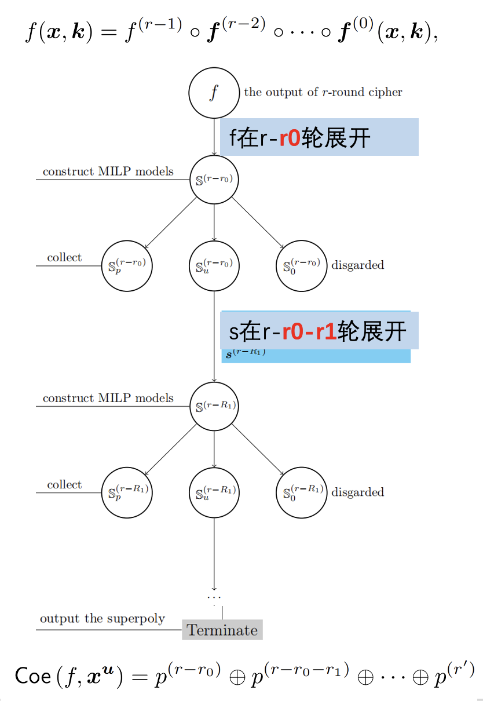
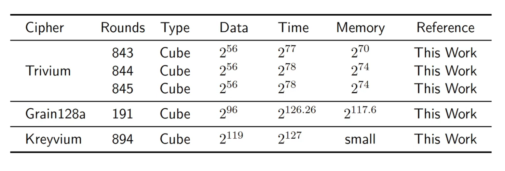

Massive Superpoly Recovery with Nested Monomial Predictions
Hu Kai等人发表在亚密2021：原文
研究意义
恢复超多项式是cube攻击中关键的一步；如果对于大规模的超多项式，可以在可接受时间内准确恢复并且能够用于密钥恢复攻击中，那么将可以改进cube攻击的结果，提高攻击轮数
motivation
在恢复超多项式中，随着密码的轮数升高，输出比特的代数标准型变得越来越复杂，现在的恢复超多项式的方法在高轮数的时候计算所需的时间会非常久。
因为分治和并行策略明显可能加速计算，因此作者基于这两个策略提出了一个新框架
贡献
一种新的框架：恢复大规模超多项式

$f$是$r$轮的迭代函数，这里用了一个分治的思想，选择一个参数$r_0$，让$f$在$r-r_0$轮展开，得到一个$r-r_0$轮的单项式的集合，对于这个集合中的每一个单项式列模型去求解一部分超多项式。那么可能有3种情况，没有可行解，去掉，短时间求得所有可行解，记录下来，短时间内无法完整求解，将这个集合继续选择一个参数$r_1$，在更低轮数继续分解直到S集合变成空集，将所有计算得到的多项式加起来，就可以得到超多项式。一种密钥恢复方法：基于大规模超多项式
不交集$D$：集合中任意两个变量不会同时出现在一个单项式中
通过遍历$J$中所有变量的值，得到$p_0,p_1,\cdots,p_m$的真值表，通过查表可以得到$p_i$的值，那么这个超多项式就可以转化成一个线性表达式，用于密钥恢复攻击。
这个方法的insight实际上就是作者发现：虽然超多项式中涉及所有变量，但是单项式的个数是远低于随机多项式的，作者认为可能可以通过这种方式得到计算复杂度优于穷搜的线性方程。
作者对于Trivium,Grain128a,Kreyvium搜出了新的cube以及改进了密钥恢复攻击的结果

评价
- 这篇论文虽然发在亚密，但是整篇文章很水，几乎没有任何创新。作者提出的新框架非常的trival，传统的加速方法
- 即使提出了密钥恢复策略，但是占用内存能几乎达到2^70以上。据我所知目前2^40以上就存不下了，这个方法也非常扯
- 21年的论文，后续已有一些改进。且在同期工作中，Sun发表的FSE2021中的程序明显快于该版程序。
总结
在cube攻击中，如果我们可以恢复项数非常多的超多项式，并利用大规模超多项式进行攻击，那么将有可能改进攻击的结果。我们使用现有的方法恢复大规模超多项式时，计算所需的时间比较久。因此作者通过嵌套使用单项式预测方法，基于分治策略和并行技术提出了一种恢复大规模超多项式的新框架，并将该框架应用到了Trivium（843轮、844轮和845轮）、Grain-128AEAD（191轮）和Kreyvium（894轮）的超多项式恢复过程中。同时作者针对包含了所有秘密变量的超多项式，提出了不交集方法来进行密钥恢复攻击。我认为即使作者提出了一种将大规模超多项式用于密钥恢复攻击的方法，但攻击的总体复杂度还是比较高的，而且不交集方法占用的内存也比较大。综合来看，作者提出的新方法可能没有穷举攻击的方法好。
上述内容仅用于非领域人员快速了解，具体实现逻辑及细节不做展示
Welcome to MinZhang’s space! If you have any questions about the following issues, you can contact me on GitHub or email- zhangmin2022@iie.ac.cn.